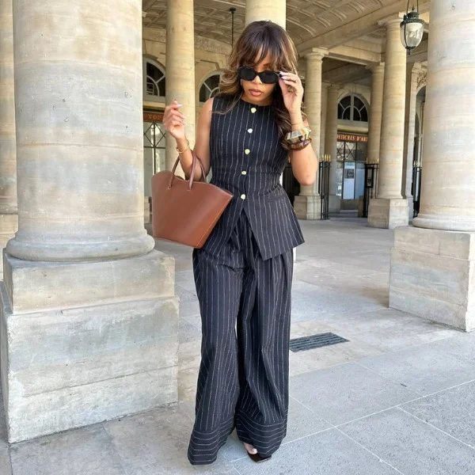

Meu primeiro post
Por: Emilly Eduarda
Boas-vindas ao meu novo blog! Aqui vou compartilhar dicas de looks incriveis que vai fazer você arrasa para onde você for.
Vou compartilhar meus looks,dicas de cores e peças que combinam.

Por: Emilly Eduarda
Boas-vindas ao meu novo blog! Aqui vou compartilhar dicas de looks incriveis que vai fazer você arrasa para onde você for.
Por: Emilly Eduarda
Estima-se que muitas pessoas querem se vestir muito melhor, então irei ajudar essas pessoas com dicas incrivei.
Fonte: Jornal Opção
Por: Emilly Eduarda
segundo passo e ver se as cores que combinam com vocẽ são quentes ou frias, pois ira ficar mas facil combinar peças
Fonte: TecMundo
Por: Emilly Eduarda
para conseguir se adequa a cada lugar,por exemplo em um restaurante chique você nao pode ir de qualquer jeito.
Fonte: TechTudo
Por: Emilly Eduarda
O termo largo em baixo e colado em cima e colado em baixo e largo em cima, isso serve para ter uma cemetria com a roupa e ter com contraste legal.
Fonte: Educa Mais Brasil
Por: Emilly Eduarda
pois se voce usar uma cor quente no calor vai ter muito contrate e vai se adequar ao calor e no frio a mesma coisa.
Fonte: BBC
Por: Emilly Eduarda
Exemplo uma camiseta basica uma calça jeans um tenis, e deixa o destaque para uma bolsa,acessório ou terceira peça,faz parecer o look mais moderno e sem ser exagerado.